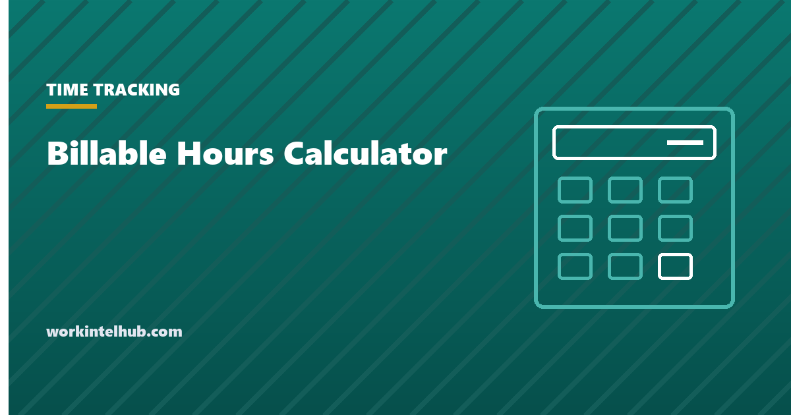

Billable Hours Calculator

Billable hours are the hours a professional can charge to a client. They are never all the hours worked, because meetings, proposals, admin, training and the time spent tracking time itself are not billable, and the gap between the two is the single most important number in any firm that sells time. Three ratios describe it: utilisation (the billable share of hours worked), realisation (the share of billable hours that survive write-downs to reach an invoice) and collection (the share of invoices that get paid). Multiply them together and you have the fraction of a working hour that turns into money.
The calculator turns weekly inputs into annual billable hours, revenue through each stage, the effective rate per hour actually worked, and the break-even rate against your cost. The rest of the page gives the benchmarks, explains where billable hours leak, and shows how to set an annual target that a human being can meet.
Billable hours calculator
Utilisation is billable hours over hours worked; realisation is what survives write-downs; collection is what clients pay. The effective rate is revenue collected divided by all hours worked. Nothing typed here leaves your browser.
Benchmarks
| Sector | Typical annual target | Utilisation | Notes |
|---|---|---|---|
| Large law firms (associates) | 1,800 to 2,100 | 60 to 75% of a long week | Targets assume 2,500-plus hours worked |
| Small law firms and solos | 1,200 to 1,600 | 38% average | The Clio Legal Trends Report puts utilisation at 38%, realisation 88% and collection 93% in 2025: about 2.4 collected hours per 8-hour day |
| Management consulting | 1,500 to 1,800 | 70 to 85% when staffed | Bench time between projects drops the annual figure |
| Agencies (creative, marketing, dev) | 1,300 to 1,600 | 65 to 75% | Account management and pitching are the main non-billable loads |
| Accounting and advisory | 1,400 to 1,700 | 60 to 70% | Seasonal: busy season runs far above, summer below |
| Freelancers and independent contractors | 1,000 to 1,400 | 50 to 65% | Sales, admin and unpaid gaps between clients are all non-billable |
The 38 per cent figure for small law firms is the one to keep in mind, because it is measured rather than targeted: in an eight-hour day the average lawyer records three billable hours, invoices 2.6 of them after write-downs, and collects 2.4. A firm that believes it bills six hours a day is usually counting hours worked, not hours collected. The employee cost calculator gives the fully loaded cost the break-even line uses.
Where billable hours leak
- Unrecorded time. Work done and never logged, which is the largest leak in firms that record time at the end of the day or week. Memory loses short tasks first: the six-minute call, the quick email, the review. Contemporaneous capture, with a timer or automatic tracking, recovers hours that were already worked; the timesheet automation guide covers the options.
- Write-downs. Hours recorded and then cut before invoicing, usually because the partner thinks the client will not accept them. Realisation below 85 per cent usually means either the estimate was wrong or the work was inefficient, and the fix is upstream of the invoice.
- Scope creep. "Can you just quickly" work that is done, not billed, and not refused. A change-order habit fixes it; the timesheet memes page has the meme.
- Non-billable creep. Internal meetings, reporting, and tool maintenance that grows until it crowds out client work. A monthly look at the non-billable categories, with a cap on each, is the control.
- Collection. Invoiced and unpaid. Below 90 per cent means credit checks, deposits and faster invoicing are worth more than any utilisation push.
Setting a target a person can meet
Work backwards from the weeks actually worked. A professional with three weeks of leave, ten holidays and a few sick days works about 46 to 47 weeks, as the weeks in a work year page shows. An 1,800-hour target over 47 weeks is 38.3 billable hours a week; at 70 per cent utilisation that is a 55-hour working week, every week, with no bench time. Targets are often set from the revenue the firm wants rather than from the hours available, and the calculator's "weekly billable needed" line is the sanity check.
A target that is reachable at a 45-hour week and 65 to 70 per cent utilisation is roughly 1,400 to 1,500 hours. Firms that need more revenue than that implies have three honest options: raise rates, improve realisation and collection (which the calculator shows is often worth more than extra hours), or hire. The fourth option, a target nobody meets, produces the timesheet behaviour that the time theft statistics page describes from the other side: padded entries, and eventually departures.
Key takeaways
- Utilisation × realisation × collection is the share of a worked hour that becomes money. Small law firms average 38% × 88% × 93%, about 2.4 collected hours in an 8-hour day.
- Annual targets: 1,800 to 2,100 in large law firms, 1,200 to 1,600 in small firms and agencies, 1,000 to 1,400 for freelancers.
- The largest leak is unrecorded time; contemporaneous capture recovers hours already worked.
- Work backwards from about 47 weeks worked: 1,800 hours needs 38 billable hours a week, which at 70% utilisation is a 55-hour week.
- Improving realisation and collection is often worth more than pushing hours.
Frequently asked questions
How do you calculate billable hours?
Record the time spent on client work in the firm's increments (tenths or quarters of an hour), total it per week, and multiply by weeks worked for the annual figure. Utilisation is billable hours divided by all hours worked. The calculator on this page takes weekly inputs and produces annual hours, revenue and effective rate.
What is a good utilisation rate?
It depends on the role. Lawyers at small firms average about 38 per cent of an eight-hour day; consultants on engagement run 70 to 85 per cent; agency staff 65 to 75 per cent. For an individual, 65 to 70 per cent of a 45-hour week is sustainable; above 80 per cent for long periods usually means unrecorded non-billable work or burnout.
What is the difference between utilisation and realisation?
Utilisation is the share of hours worked that are billable. Realisation is the share of billable hours that are actually invoiced after write-downs and discounts. Collection is the share of invoiced amounts that clients pay. All three multiply together; a firm can have high utilisation and still earn little if realisation or collection is poor.
How many billable hours a year is realistic?
About 1,400 to 1,500 for a professional working a 45-hour week at 65 to 70 per cent utilisation over 47 weeks. Large law firm targets of 1,800 to 2,100 assume working weeks of 55 hours or more. Targets above what the available weeks allow produce padded timesheets rather than hours.
What counts as non-billable time?
Business development and proposals, internal meetings, training, administration, invoicing and time recording itself, bench time between projects, and any client work the client has not agreed to pay for. Tracking non-billable time by category is how firms find out where the billable hours went.